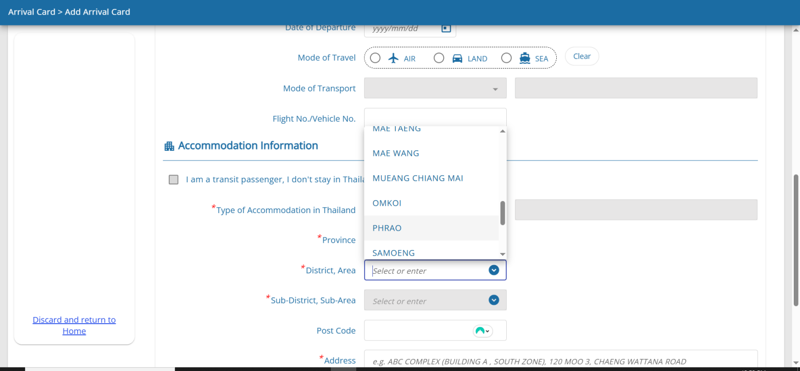

Getting a working Thai SIM card is one of the first things you should do after landing in Chiang Mai. Everything runs on it: maps, food delivery, ride apps, banking, LINE messaging, and your backup internet connection when the cafe WiFi is struggling. Thailand's mobile infrastructure is genuinely good. The prices are low. The process is simple. There is no reason to spend your first week relying on roaming charges from your home carrier.
The Two Providers That Matter
AIS (Advanced Info Service) is the network most long-term expats in Chiang Mai end up on. Coverage across the city is excellent, and importantly, AIS performs best in the areas outside the city core: mountain roads toward Doi Suthep, the outer residential zones of Mae Rim and San Sai, and the rural highways heading north toward Chiang Rai. If you plan to travel within Northern Thailand, AIS is the safer choice. Customer service has English-speaking staff at major branches. The AIS shop on Nimman Road handles most expat queries without issue.
True Move H is the result of the 2023 merger between True Move and DTAC. It is now the largest network by subscriber count in Thailand. Coverage in Chiang Mai city centre and in Nimman is strong. The True Move H app is well-built and lets you manage your account, top up, and change packages without visiting a shop. True Move H bundles well with True Vision cable TV and True Fibre home internet if you want a single provider for everything. Pricing is competitive with AIS across most plan tiers.
A third option, NT (National Telecom), exists as the government-owned carrier after the merger of CAT and TOT. Coverage is adequate in urban areas but noticeably weaker in the North. Most expats skip it entirely. The plans are not competitive enough to justify the coverage trade-off.
Getting Your SIM: First Week vs Long-Term
Airport Tourist SIMs
Both AIS and True Move H have counters at Chiang Mai International Airport arrivals. Tourist SIMs are available immediately on arrival, typically for 299-499 THB for 7-30 days of unlimited data. These are useful for the first few days while you sort accommodation and get oriented. They are not the best long-term value and are not designed for ongoing use.
Long-Term Prepaid SIMs
Within your first week, visit any AIS or True Move H shop or a 7-Eleven to get a proper ongoing SIM. Bring your passport. The process takes ten minutes. You will be registered biometrically (a photo is taken at the counter), which is now required under Thai law for all SIM registrations.
Unlimited data prepaid packages are the standard for most expats. AIS offers an unlimited 4G plan with speed prioritisation for 499 THB per month, and a higher-tier unlimited plan at 699 THB with faster guaranteed speeds. Both are renewable monthly via the myAIS app or at any 7-Eleven. True Move H has comparable plans at similar prices. You can top up and change packages without speaking to anyone in person once you have the app installed. For everything else you need to set up in your first days in the city, the Chiang Mai arrival guide covers the full sequence in practical order.
Coverage in Chiang Mai and Northern Thailand
Within Chiang Mai city, both AIS and True Move H provide reliable 4G. 5G coverage is expanding in the central areas. In practical terms, 4G speeds in Chiang Mai are fast enough for video calls, streaming, and any remote work task. Measured download speeds in Nimman and the Old City regularly hit 50-150 Mbps on 4G, which exceeds what many people get on home broadband in their countries of origin.
Outside the city, AIS is noticeably more reliable. The road to Doi Suthep, the mountain villages on the Thai-Myanmar border, and rural stretches of Highway 107 toward Mae Rim all have better AIS coverage than True Move H. For anyone spending time outside the urban core, AIS is the practical choice.
Buying a Phone in Chiang Mai
If you need a handset, Chiang Mai has several good options. Pantip Plaza on Chang Klan Road is the main electronics market, with multiple floors of phone shops, accessories, and repair services. Prices for new handsets are close to international RRP. Second-hand phones in good condition are available from multiple stalls and typically run 30-50% below new prices for recent flagship models.
Power Buy at Central Festival and Central Airport Plaza carries the full range of current handsets from Apple, Samsung, Oppo, Vivo, and others. Official warranty applies. Staff speak basic English. For budget Android handsets, the Xiaomi, Realme, and Oppo ranges offer strong specifications at prices that make Australian phone prices look embarrassing. A capable mid-range Android for 5,000-8,000 THB (~220-350 AUD) is routine here. You can also buy phones through Lazada or Shopee and have them delivered to your address within one to two days at typically lower prices than physical retail.
eSIM for Arriving Travellers
Both AIS and True Move H now offer eSIM registration. If your phone supports eSIM, you can purchase a plan online before arriving and activate it as soon as you land. AIS eSIM is available through the myAIS app. True Move H eSIM through their website. This is increasingly the preferred option for people arriving with compatible devices, as it eliminates the airport SIM counter queue entirely.
Essential Apps Once You Have a Thai Number
A Thai phone number unlocks several things that matter for daily life. LINE is the dominant messaging app in Thailand. Landlords, building managers, local businesses, and community groups all use LINE rather than WhatsApp. Setting it up with your Thai number immediately connects you to this layer of local communication that simply does not exist on international platforms.
Grab (ride-hailing and food delivery), Bolt (ride-hailing, often cheaper than Grab), and foodpanda all require a working Thai number for account verification. So does SCB Easy or Bangkok Bank Mobile Banking when you open a Thai bank account. The phone number is the spine of your digital life in Thailand. Sorting it in the first 24 hours makes everything that follows significantly easier. The broader question of settling into life in Chiang Mai becomes much smoother once the basic infrastructure is in place.
The Setup That Works
AIS unlimited prepaid at 499-699 THB per month is the standard expat choice. Get it at any 7-Eleven or AIS shop with your passport. Pair it with home fibre for complete connectivity. Install LINE immediately after registration. That is the full mobile setup most long-term residents in Chiang Mai run on.
Guru Tip: If you have an unlocked dual-SIM phone, keep your home country SIM active in the secondary slot for the first month while you confirm everything important has been transferred to the Thai number. Banks, government services, and any accounts with two-factor authentication tied to your home number will need to be updated one by one. Doing this gradually with both SIMs active prevents the inevitable moment where you cannot receive a verification code for something important.
Frequently Asked Questions
Which mobile network is best in Chiang Mai?
AIS has the strongest overall coverage in Chiang Mai city and the surrounding regions including mountain areas. DTAC (now merged with True Move as NT) and True Move are solid alternatives with competitive pricing. For travel into the mountains and rural Northern Thailand, AIS coverage extends furthest. For Chiang Mai city use, all three major networks perform well.
Should I get a prepaid or postpaid SIM in Chiang Mai?
Prepaid tourist SIMs are fine for short stays. For long-term residents, postpaid plans typically offer better value: unlimited data packages, better international call rates, and the ability to maintain the same number month to month without top-up management. Postpaid requires a Thai ID or passport plus proof of address. Major carrier stores in malls process postpaid applications on the day.
How much does a monthly mobile plan cost in Chiang Mai?
Prepaid tourist packages with 30-day unlimited data start around 299 to 399 THB. Postpaid unlimited data plans run 399 to 699 THB per month depending on speeds and international call inclusions. By Western standards, Thai mobile plans are extremely affordable. A fully unlimited 4G/5G postpaid plan costs less than AUD 30 per month.
Is 5G available in Chiang Mai?
Yes in parts of the city, particularly in central Chiang Mai, Nimman, and around the major malls. 5G coverage is expanding but not yet universal across the city. 4G LTE coverage is comprehensive throughout the urban area. For most residential and daily-use purposes, 4G LTE speeds in Chiang Mai are fast enough that 5G makes little practical difference.
Can I use my home country phone number in Thailand long-term?
You can roam on your home number but international roaming rates are expensive for long stays. Most long-term residents either use a Thai SIM as their primary number or use a dual-SIM phone with both their home country and Thai numbers active. Apps like WhatsApp and LINE (the dominant messaging app in Thailand) work over data regardless of which SIM is active, so maintaining both numbers is practical with a dual-SIM device.
Guru Tip
Get a Thai phone number on your first or second day in Chiang Mai and give it to everyone you meet. LINE is the dominant communication platform in Thailand for everything from personal messages to business transactions to restaurant reservations. Thai people will almost never initiate contact via WhatsApp or international SMS. Without a Thai number registered on LINE, you are invisible to the Thai side of Chiang Mai's social and business network. The SIM costs 100 THB. The network access it provides is worth considerably more.